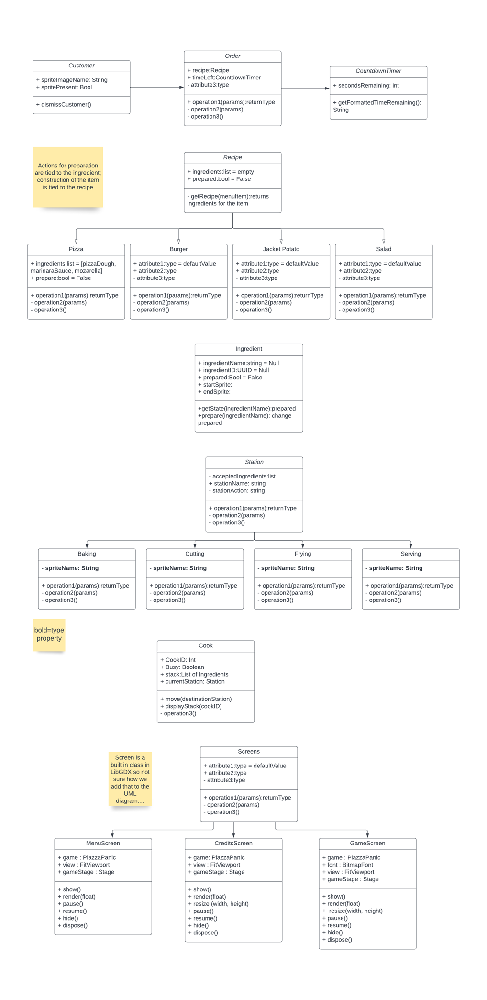
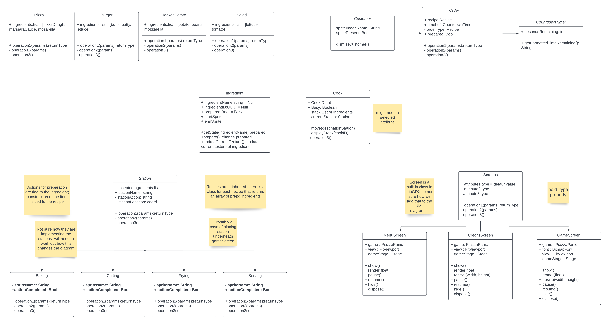
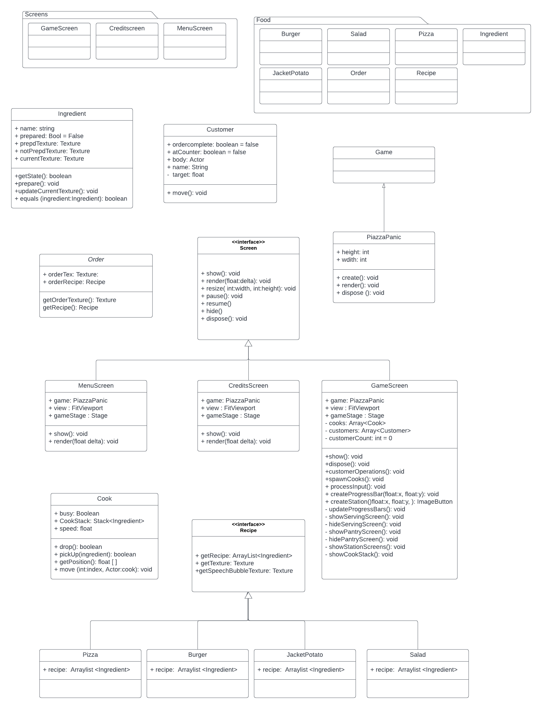

CRC Cards
Our crc cards can be found here
These are our initial crc cards, we tried to cover the main components of the game. The idea of grouping was also confusing to us but after following the RDD steps we realised we were missing a 'Clock' card and we managed to group the cards.

These are our final crc cards grouped together.
Class Diagrams
Our class diagrams can be found here
First class diagrams:
Second class diagrams:
Final class diagrams:
Credits: University of York: Madeleine Nielsen https://github.com/mud66 (mn1013@york.ac.uk), Scarlet Desorgher https://github.com/SGDes(sgd516@york.ac.uk), Immanuel Ghaly https://github.com/imozwastaken (ihaag500@york.ac.uk), Oscar Gunn https://github.com/0s-Cr (og676@york.ac.uk), Andrew Palombo https://github.com/aopalombo (ap2179@york.ac.uk), Josh Thomas https://github.com/jt1883(jt883@york.ac.uk)